This screen is used to view and edit the Deployit repository. The following shows an example of the Repository Screen:
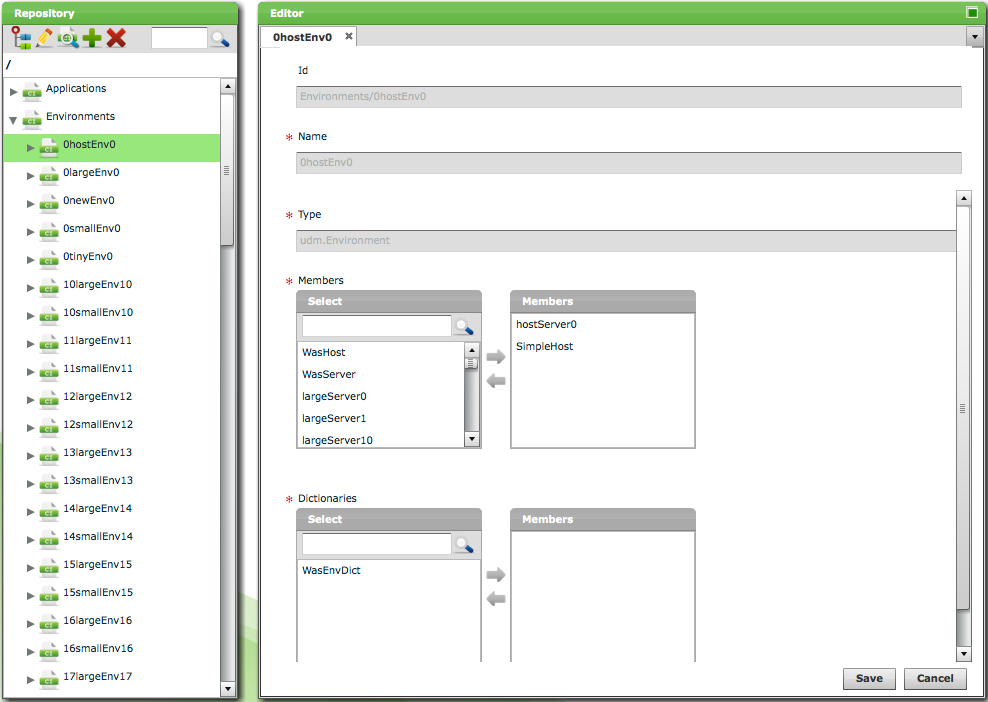
The screen consists of the following components:
The Repository Browser is used to locate CIs in Deployit.
The following is a snapshot of the Repository Browser:
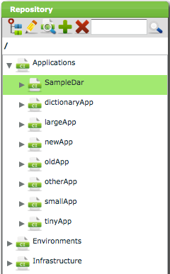
The Repository Browser shows those parts of the Deployit repository that the logged in user is allowed to see.
If the list of items is longer than can fit on one screen, the Repository Browser will display one screen of items and a scrollbar.
The Repository Browser has the following toolbar:
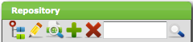
It contains the following controls:
The content of the Repository Browser can be searched by typing text in the search box and pressing Enter or clicking on the magnifying glass. The Repository Browser will show only those entries matching your search string (either as a complete match or a substring). Note that only the top-level of the entities in the Repository Browser is being searched. If you want to search for entities that are not at the top-level, restrict the scope of the browser to a lower-level item and then apply search (see below).
To quickly locate a particular CI, the scope of the Repository Browser can be restricted by double-clicking on a particular item. This narrows the scope of the data being shown and makes it possible to search through it.
For example, after double-clicking the AnimalZoo-ear application in the situation shown above, the Repository Browser shows the following:
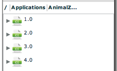
Using the Search box it is possible to search for a particular deployment package version.
By double-clicking on the deployment package with version 1.0, the Package Browser shows the following:
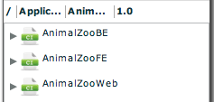
Using the Search box it is possible to search for a particular member of this deployment package.
Also note the breadcrumbs shown above the repository tree. When navigating the tree, the breadcrumb trail can be used to navigate back to higher levels.
The Repository Browser can also be used to create new CIs. All CIs in Deployit are stored in a hierarchy. CIs are children of or parents to other CIs, depending on their type. To create a new CI, Deployit must be told where in the repository the CI must be stored.
To add a CI, first select the parent CI in the repository browser. This can be one of the repository's root nodes or any child node. Now use either the Add new CI button in the toolbar or click the + sign shown behind the selected parent CI. A popup with possible child node types will be shown:
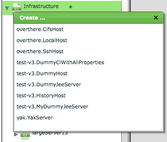
After selecting the new CI type, an editor window will open with a new CI instance of the specified type.
The CI Editor tab is used to edit CIs found in the Repository Browser. The following image shows an example of the editor:
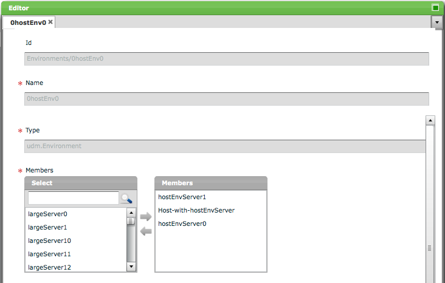
The Editor tab shows the properties of the CI being edited. Depending on the CI type, different properties will be shown.
Id Property
The id property of a CI is a unique identifier for the CI and determines it's place in the repository. It is a string consisting of folder nodes and terminated by a leaf node, all of which are separated by / characters. For example:
/Applications/PetClinic/1.0/PetClinic.ear
This denotes a CI stored in the PetClinic.ear leaf node under the Applications, PetClinic and 1.0 folder nodes.
Deployit's repository layout matches the UDM and requires CIs to be stored at certain locations.
Name Property
The name property is the last part of the CI name and can be used as a shorthand for the CI though it is not necessarily unique.
Type Property
The type property stores the CI's type. Once set, it can not be changed.
List of Values
If a CI contains a property with a restricted number of values, the following control is shown:
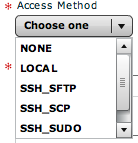
Select one of the available values by clicking on it.
CI References
If a CI contains a collection of references to other CIs, the following control is shown:
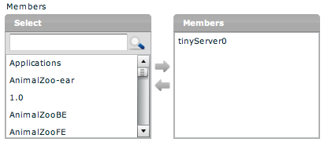
The right box shows the CIs currently in the collection. Use the arrow pointing left or double-click on the item to remove it from the collection.
The left box is used to locate CIs for inclusion in the collection, either by using the scrollbar or searching using the textfield. Use the arrow pointing right or double-click on the item to include it in the collection.
Key - Value Pairs
If a CI contains key-value pairs, the following control is shown:
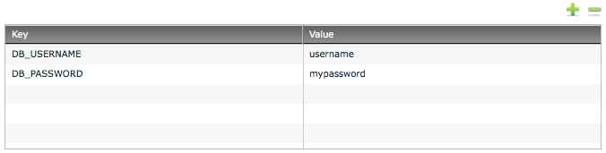
Use the + and - buttons to add or remove rows. The tab key can be used to navigate to the next cell in the grid.
The CI Comparison tab is used to compare CIs found in the Repository Browser. The following image shows an example:
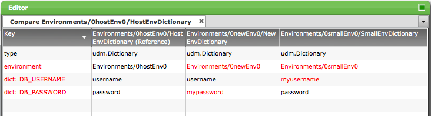
To perform a comparison, follow these steps:
The Comparison tab shows a grid with the CIs properties as rows and columns for each of the CIs being compared. If a CI has a value that is different from the first, reference CI, the property and the differing values are colored red.